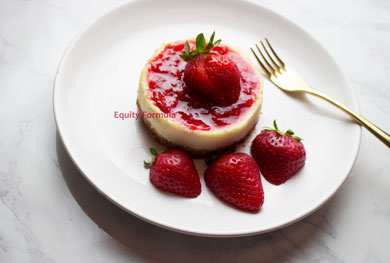

Bake at 350 for 15-20 min or till the toothpick comes out dry.
Cake Ingredients
3 TBS All Purpose Flour
3 TBS Dutched Cocoa Powder
1/4 Tsp + Pinch Baking Powder
Pinch Salt
2 TBS Oil
3 TBS Honey
4 TBS Water (add more till the batter is wet.)
Pinch Vanilla Extract Powder or Extract
1/2 Tsp Coconut Extract
Icing Ingredients
2 TBS Milk Powder or 1/4 Cup Milk
3 TBS Water, omit if you are already using regular milk
1/2 Tsp Heat Treated Flour (Add more if needed)
Pinch Salt
1 Tsp Honey (Add more if needed) All Purpose Flour
Pinch Vanilla Powder or Extract
1 TBS Shredded Coconut (Add more if needed.)
Toppings
1/4 Cup Toasted Coconut (Add more if needed.)
Mix all the ingredients in a bowl. Add water as needed till your batter is wet.
Pour the batter into your cake pan and place it in the oven.
Bake till toothpick come out clean and remove from the oven.
Let the cake cool completely before adding icing.
Preheat the oven at 350.
Line the baking tray with parchment paper. Then pour the coconut flakes in it.
Place the tray in the oven, and bake at 350. Check the flakes every 3 minutes, remove the coconut flakes when they are golden.
Transfer the coconut flakes in a different tray, and let them cool. If you keep them in the tray from the oven, they might continue to cook. It is best to remove them from heat as soon as they are done toasting. You can store in a container at room temperature in a dry place, I store extras in the freezer.
In a saucepan, add water and wait till it is warm not boiling, and add the milk powder. Stir till the powder is dissolve . (Skip this if you are using regular milk and place the milk in low heat.)
Stir the milk on low heat and add the honey, heat treated flour and vanilla. Mix till the icing becomes thick.
Then add salt and the shredded coconut to thr saucepan. Mix everything till combined. Then remove from heat.
Pour the icing in a bowl and cover it to keep it moist. I use the icing while it is till warm.
Take the cake slices and add the icing between the slices. Then add the toasted coconut on top. Refrigirate till you are ready to serve.
Please fill out the form below.
Processed foods left me unsatiated and with side effects such as fatigue. So, I decided it was time to create dishes that were healthy, and preservative free. My snacks and desserts are delicious and leave you feeling full. In addition, I do not use a million different ingredients. I use high quality ingredients, and focus on what is necessary for flavorful food. I make food that is meant to nourish, love and bring joy.Nina